JellyDazzle v2.1 · the library
Everything the engine can put on screen. v2.1 does not play one of these at a time — it stacks up to four of them, each on its own clock, each fading in and out on its own, so what you actually see is a combination that has probably never occurred before. The role badge on every card is what the engine measured at startup and is what decides which layer that pattern is allowed to occupy.
Grouped by the layer role the engine measured for each one — how much of the
screen it covers, and therefore where in the stack it belongs. Every strip below is four real
frames from that pattern, rendered by the shipping code, each pattern on a different one of the
120 colour schemes. JD_MODE=n on the card runs that one alone.
Numbers on each card: render cost in milliseconds at 1280×960, mean frame-to-frame channel change (the house limit is 8 — nothing here strobes), and how much of the screen it lights up.
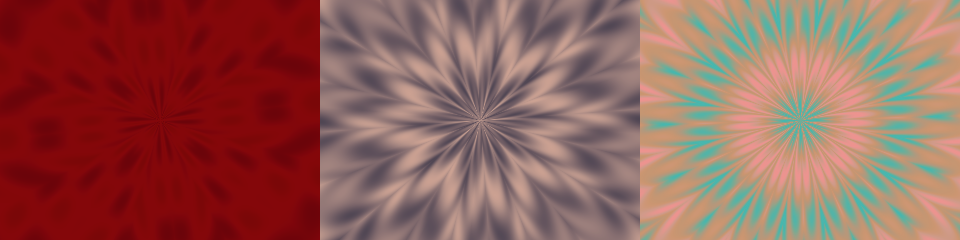
A full-screen dihedral kaleidoscope whose fold count steps through 4, 6, 8, 10, 12, 14, 16 sections, each stage crossfading into the next. Inside the wedge lives a rose-curve interference field, so every fold count reads as a different flower — rainbow petals over radial ripples.
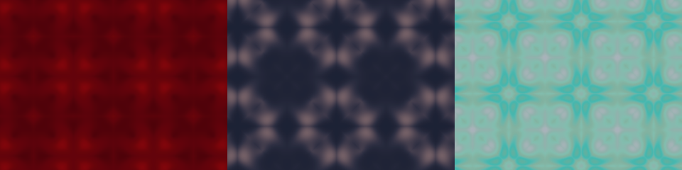
A "bathroom-tile kaleidoscope": the p4m wallpaper group folds a drifting four-wave plasma into a perfectly mirrored quilt of clover-and-star tiles. The cell size slowly breathes so the quilt zooms in and out while the lattice glides diagonally.
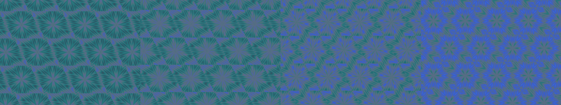
A p6m-flavored hexagonal wallpaper: every cell of a triangular lattice holds a 12-petal snowflake rosette built by a D6 mirror fold, tiled edge to edge like stained glass.
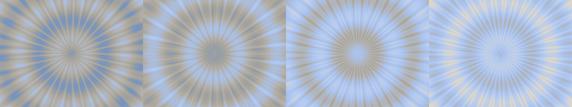
A tie-dye sun mandala whose number of spokes is never constant: the fold count N glides continuously between 4 and 16, so petals split and merge like a living iris while rings pulse outward from the center.
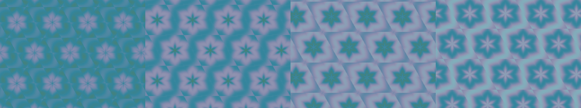
A hexagonal wallpaper that morphs between two symmetry groups live: chiral pinwheels (rotation-only, p6 flavor) melt into mirrored six-point stars (p6m flavor) and back, across the whole lattice at once.
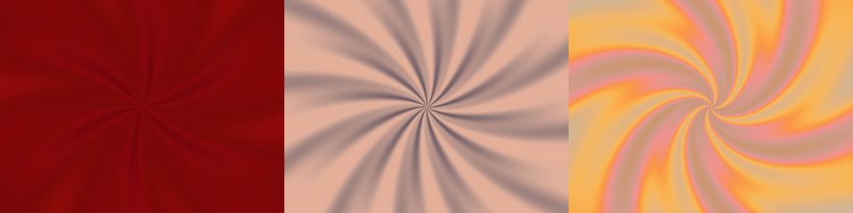
A smooth-shaded log-spiral pinwheel — the direct heir of the original's R16 tile — whose arm count steps through 6, 9, 12, 8, 10 with soft crossfades, while spiral tightness breathes through zero so arms uncurl straight and recurl the other way.
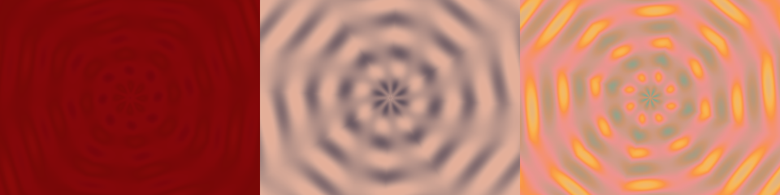
Concentric polygon rings — square, octagon, diamond — pulse outward from the center while the ring shape itself morphs between the three norms and an 8-petal angular modulation dapples the bands into beads.
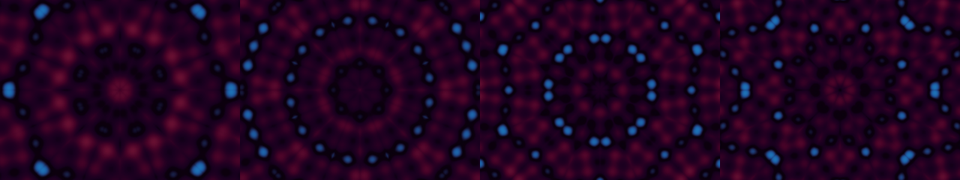
A rotozoomed procedural tile texture seen through an 8-fold mirror: mirrored copies counter-rotate against each other at every seam exactly like a physical kaleidoscope being turned.
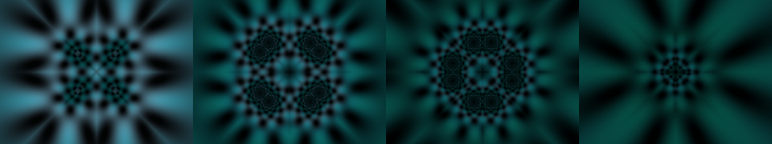
A classic fly-through tunnel whose mouth orbits off-center behind a 4-fold mirror, so four (then eight, by reflection) tunnel mouths bloom, merge, and drift apart while everything rushes gently inward.
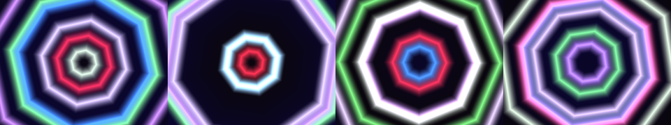
Amiga copper bars promoted from scanlines to radius: six neon gradient bars ride independent sine paths in and out as crisp concentric octagon rings on a midnight-blue field, layering additively where they cross.
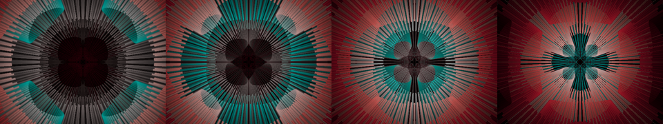
Kefrens/Alcatraz bars with the scanline axis swapped for radius: a never-cleared angular line buffer is stamped and re-stamped as radius grows outward, so the bar's wander smears into taffy tendrils radiating from the center, mirrored 8 ways.
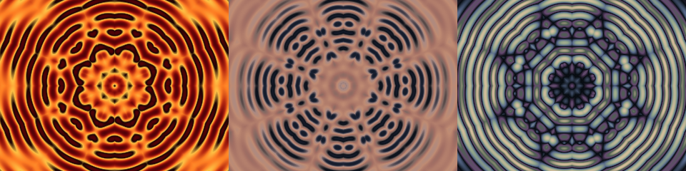
Two interference-ring sources orbiting inside an 8-fold wedge — sixteen mirrored wave sources on screen — whose beat patterns weave silky teal-and-ember moiré fabric with lens-like eyes along every seam.
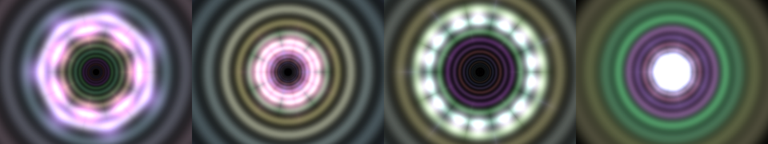
Fold-aware video feedback — the king of dazzle effects: a glowing orbit-blob and a breathing ring are stamped into a 7-fold wedge, and every generation of the feedback re-mirrors, twists ~0.42 rad, and shrinks toward the center, building an infinite self-similar mandala of rings-within-rings.
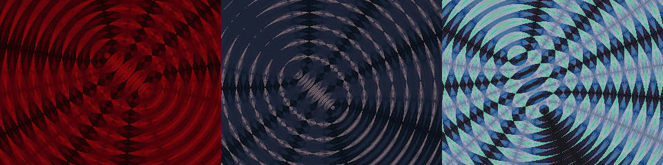
Two invisible ring emitters wander the screen and their bands XOR into crisp lens-and-eye interference figures — hard-edged fringes stepped from midnight indigo up through royal blue to molten gold.
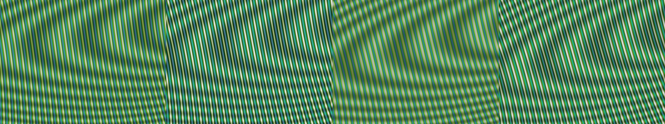
Two sheets of fine diagonal thread — like layered silk — slide across each other, and their beat pattern blooms into wide soft bands of rose, magenta and violet that bow and scissor as the sheets' angle breathes.
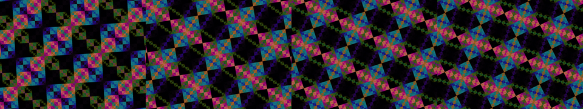
The HAKMEM munching-squares lattice (x XOR y) rendered as crystalline rainbow frost: nested diamond mouths and Sierpinski steps in full-spectrum bands that slowly rotate and breathe in scale while color washes through the fractal.
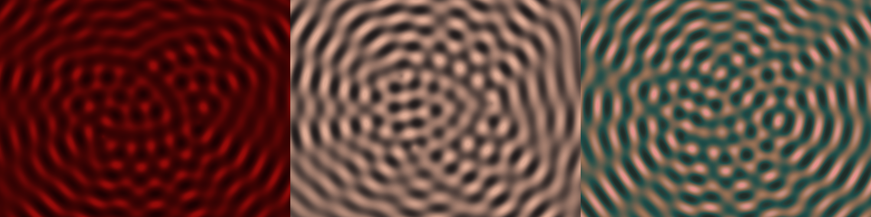
Three wave sources ride the corners of a slowly turning triangle, each ringing at a slightly detuned frequency; where their wavefronts agree the screen ignites in golden-orange crests, where they disagree it cools into wine-purple troughs.
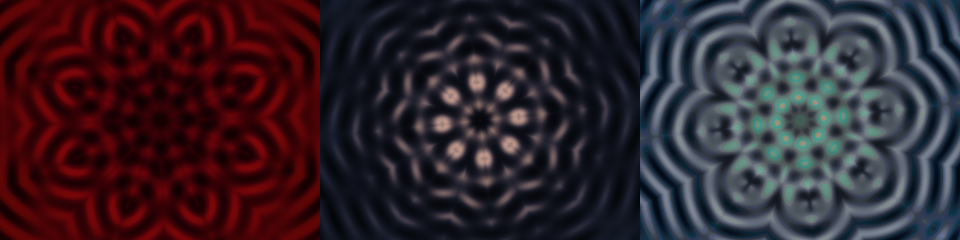
An eight-petal jade-and-emerald mandala: two wave sources ripple inside a single kaleidoscope wedge and the fold mirrors them into sixteen phantom emitters whose fringes kiss along every seam, forming lens-shaped "eyes" on the petal boundaries.
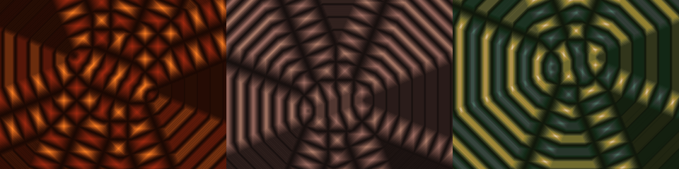
Two trains of concentric octagon rings glide from a pair of wandering centers and interfere into a faceted crystal lattice — bright ice-white ridge lines over deep blue and violet cells, like frost ferns growing on cut glass.
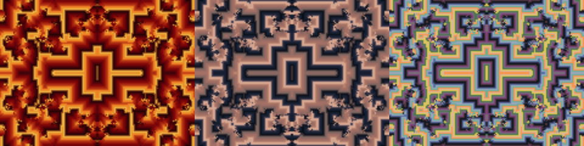
A rainbow cyclic-cellular-automaton quilt: interlocking rectilinear wavefronts and spiral cores in full-spectrum ramps, mirrored 4-fold so it reads as a woven mandala.
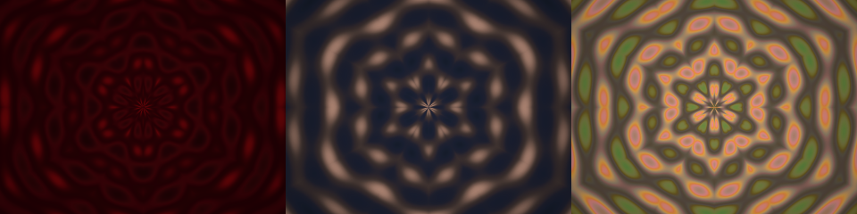
A gold/teal chemical mandala: six-fold folded spiral wavefronts rotate around a starburst core like a Belousov–Zhabotinsky dish viewed through a kaleidoscope. Petal rings breathe outward while a counter-wave crawls back in.
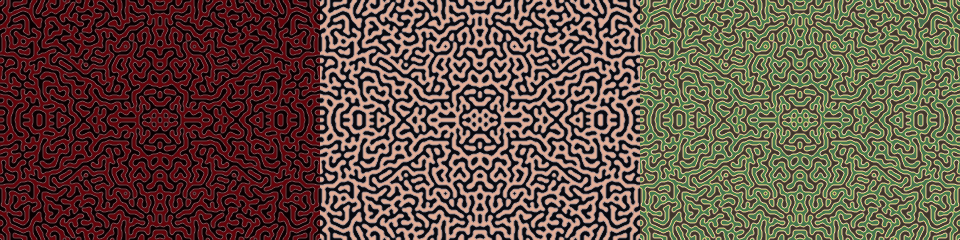
A fingerprint / brain-coral labyrinth in indigo and amber: reaction-diffusion stripes locked into a 4-fold symmetric maze, with bright seams glowing along the stripe boundaries.
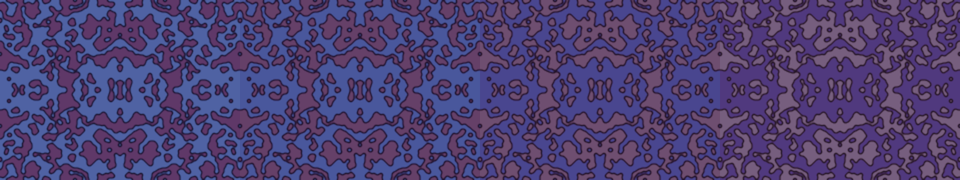
Bold two-tone amoeba patches — dusty rose, amber, aubergine, chartreuse — melting into and out of each other like a living pueblo quilt, mirrored 4-fold. Patch borders are inked dark so it reads as stained ceramic.
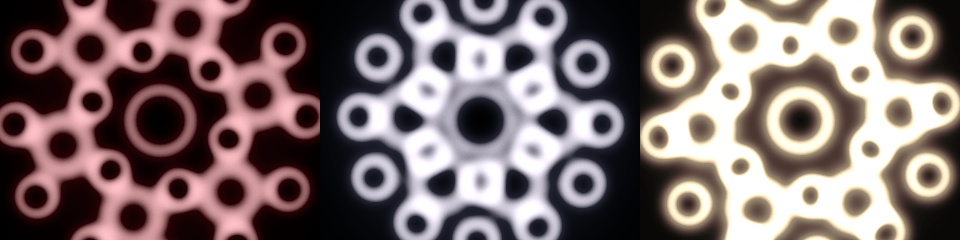
A colony of glowing ring-shaped "orbium" cells — cream, sage, and cyan on near-black — orbiting in three concentric symmetric rings. As the rings breathe, neighboring cells overlap and their membranes fuse into amoebic super-cells, then pull apart again.
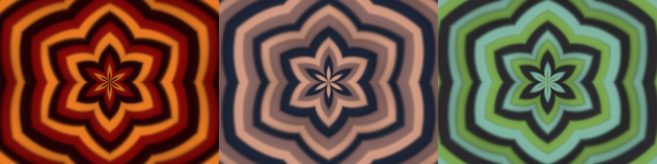
Three species — magenta, lime, azure — locked in a rock-paper-scissors chase, their territories drawn as bold six-petaled flower rings that spiral slowly inward. Domain borders are soft gradients, like ink fronts advancing through wet paper.
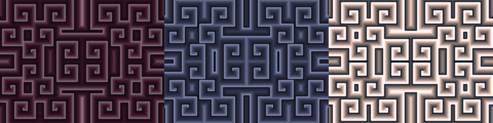
A Greenberg–Hastings excitable medium: neon wavefronts crawl through a dark field, curling at their broken ends into greek-key spiral cores — like luminous circuitry etching itself, mirrored 4-fold.
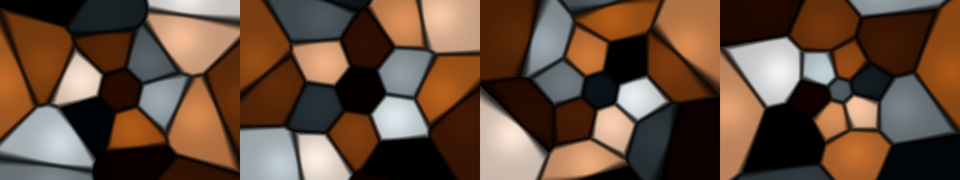
Stained glass alive: jewel-toned Worley cells — emerald, violet, ruby, gold — separated by dark leading that slithers as nineteen seed points orbit in three symmetric rings.
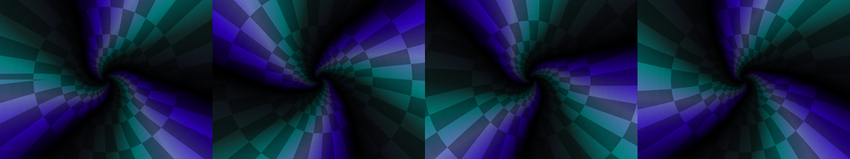
A classic demoscene tunnel: rainbow spiral bands rush past the viewer down a dark throat at screen center, with a soft checkerboard dimming that gives the walls tile texture.
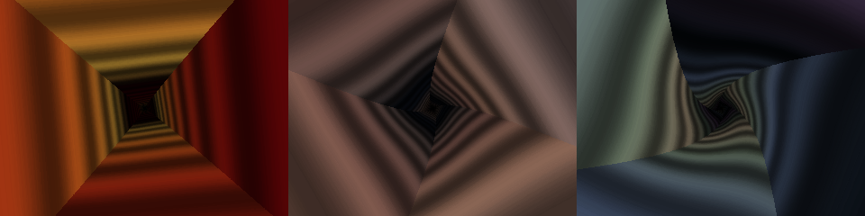
Nested glowing squares recede to a dark vanishing point — a square air-shaft you are falling down — while the whole shaft slowly torques, the deep end twisting faster than the mouth so the corridor appears to wring itself like a towel.
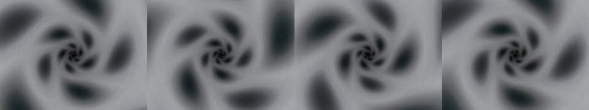
Two interlocked logarithmic spirals — a 3-arm falling inward and a 2-arm slowly winding the other way — interfere into curling paisley whorls that pour endlessly into the center, forever zooming without ever repeating a frame exactly.
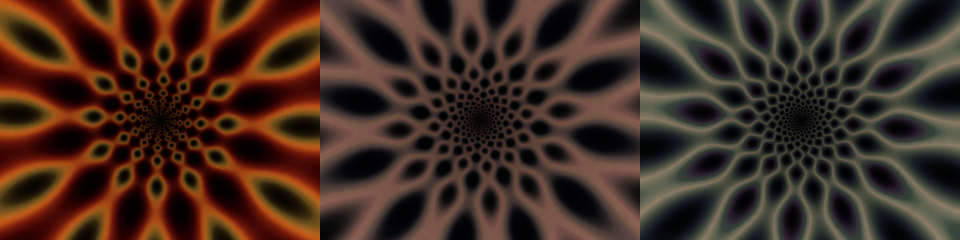
Twenty-four molten rays fan out from a dark core like a blacksmith's starburst, bending gently as they go, while glowing copper rings race down the rays into the center — sunburst and tunnel fused into one furnace mandala in ember red, orange, gold and white-hot.
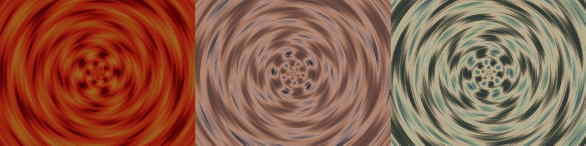
The camera-pointed-at-its-own-monitor effect, stateless: a 5-petal flower is echoed at eight nested scales, each echo rotated half a radian deeper and dimmer, and the stack dives continuously so fresh echoes bloom out of the center and the outermost drift off-screen forever.
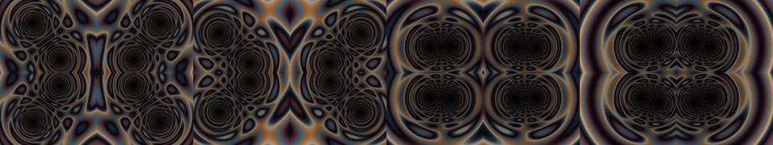
Eight tunnel mouths (two real, mirrored 4-fold) wander slowly around the screen, their ring systems flying in opposite directions and beating against each other into hyperbolic moire lenses; at the mirror seams the mouths kiss their own reflections.
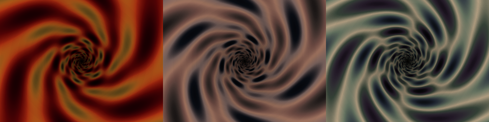
Six broad petal arms — moss green through chartreuse to gold and vermilion — curl into a black gravitational core, and the spiral's tightness slowly breathes: the flower winds up into a tense whirlpool, then relaxes into an open pinwheel, while ring-pulses of brighter matter stream continuously…
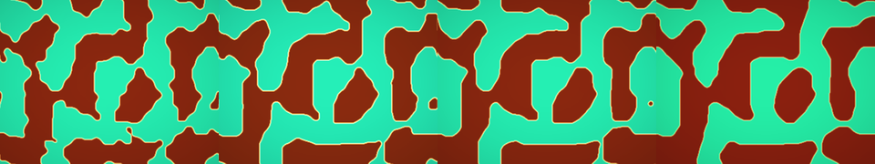
Bold reaction-diffusion colonies — solid vermilion continents on cobalt seas, edged everywhere with crawling gold rims — slowly deform, split and merge like living coral viewed from above.
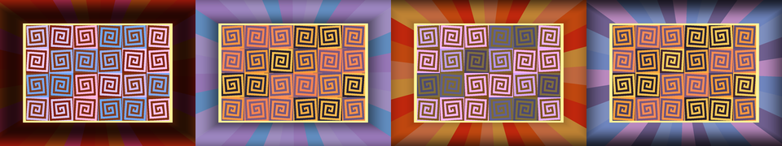
A central rectangular panel packed with interlocking greek-key / meander hooks (alternating chirality per cell, exactly the a02–a04 maze-panel reference) framed in gold, surrounded by a border of kaleidoscope wedges.
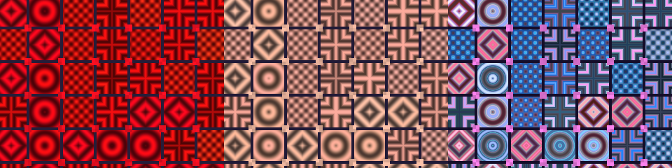
A stitched quilt of 48-px patches, each patch owning ONE distinct motif — nested diamonds, target rings, cross bands, or a woven checker — in its own hue, separated by dark sashing with glowing corner buttons.
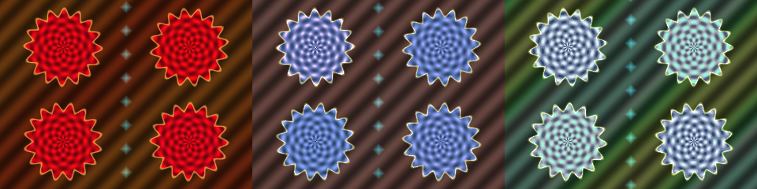
Four large sunflower-gear rosettes in a 2x2 array — toothed golden discs with dotted seed cores — sitting on a slow blue diagonal-stripe ground, with a chain of small cyan diamonds running down the center vertical (straight from the R13 gear-flower reference, d22–d24).
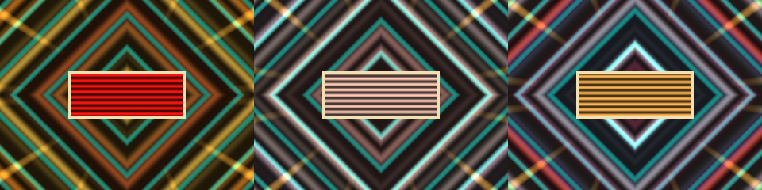
A four-fold mirrored court of emerald-and-gold chevrons marching diagonally from every corner toward a cream-framed violet striped core at center (the d19–d21 neon-chevron routine slowed to a meditative pace), with teal accent V's and faint corner ray fans.
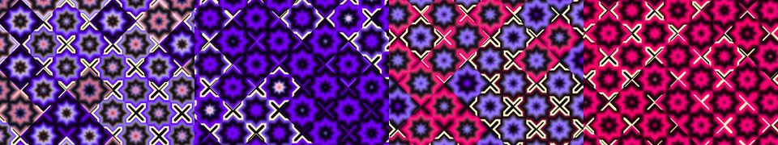
The classic Islamic star-and-cross tiling as living objects: gold-rimmed 8-point stars filled with concentric rainbow layers alternate with cool plus-shaped crosses on a dark indigo weave, each shape breathing on its own phase while the whole tiling drifts.
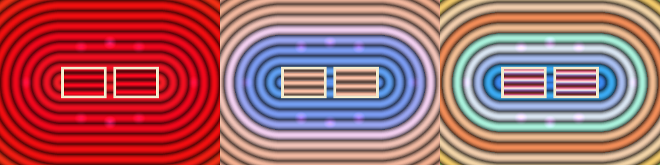
Full-screen concentric racetrack (stadium) rings in rolling rainbow bands radiate from a pair of white-framed striped drums that sit side by side at center, their stripe ramps rolling in opposite directions (the d28–d30 oval routine), with soft plum blobs pulsing on the perimeter at mirrored…
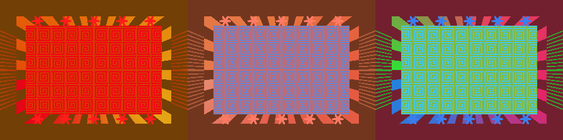
A big central panel covered edge-to-edge in interlocking greek-key maze motifs, framed by a border of blue kaleidoscope wedges with small six-lobed rosettes, while thin rays fan out horizontally behind it.
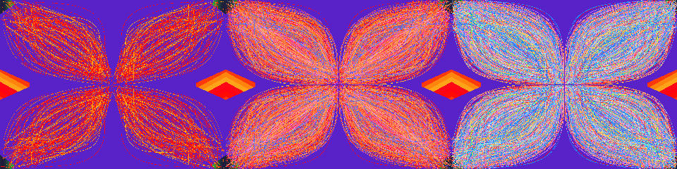
A flat violet flood on which fine, gently-curved rainbow threads accumulate one by one, always sweeping corner-to-center through a 4-fold mirror so the whole screen slowly knots into a symmetric X/butterfly web.
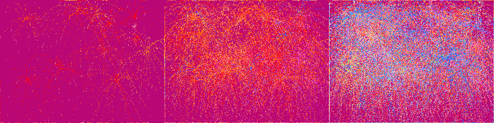
Radial particle bursts pop every few frames across a hot magenta flood, each in one or two hues, their thin trails drooping under gravity and staying on screen forever — over hundreds of frames the field saturates into a dense multicolor fibrous wash, then the palette gently darkens.
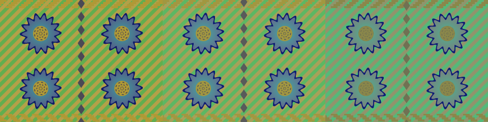
Four big toothed gear/sunflower rosettes in a 2×2 array — yellow-green discs with dark rims and dotted navy seed cores — sit on a ground of drifting diagonal blue/cyan stripes, with stepped-triangle borders along the top and bottom edges and a little diamond chain running down the center vertical.
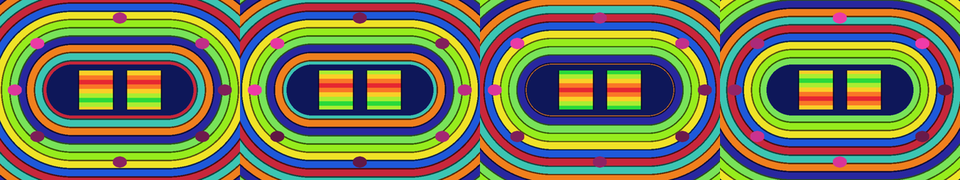
The entire screen is concentric stadium/racetrack ovals — thick multicolor bands with dark seams — slowly shimmering outward from the center while their hues roll through an acid green/yellow/blue/red cycle; inside the innermost oval, two side-by-side striped "drums" roll their green→yellow→red…
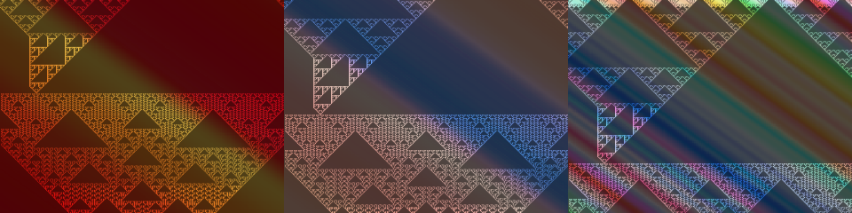
A bolt of woven cloth creeping downward: nested Sierpinski triangles, woven diagonals and combs in rainbow thread, the weave changing character in horizontal bands as older cloth passes below.
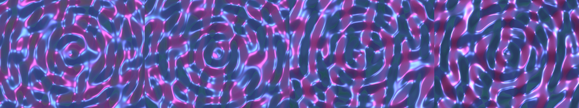
Hammered, oil-slicked metal: a hexagonal relief of ridges and dimples with a ring wave rolling out of the centre, lit by three coloured lights that crawl slowly around it, throwing hard specular glints along every crest and pooling deep colour in the valleys.
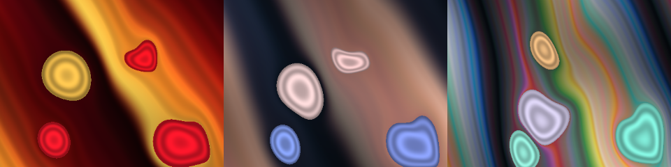
Turkish ebru, run backwards. Marbling has exact closed-form maps and both are inverted here per pixel rather than simulated.
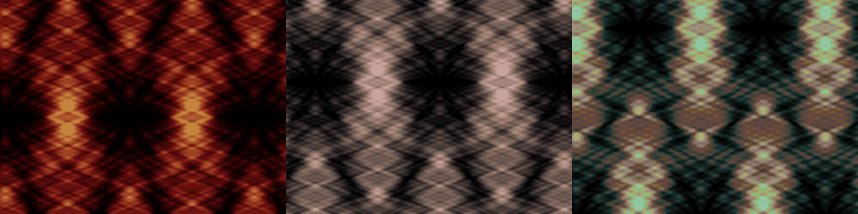
The self-image lattice behind a diffraction grating, computed the way the physics writes it.
A wall of hand-glazed tiles: every 60-px cell is its own tiny 4-fold mirror kaleidoscope, alternate cells add a diagonal fold (p4g-style checkering), and per-cell phase offsets make each tile a different diamond/clover motif.
The canonical four-sine demoscene plasma folded six ways, so its blobs become breathing petals around a slowly turning center. Full rainbow hue flows through the petals while brightness swells and fades like slow surf.
The demoscene twister run over radius instead of scanlines: a five-armed braid of jewel-toned ribbons (ruby, amber, emerald, sapphire) that twists sinusoidally along its length while slowly rotating.
Four metaballs folded six ways so every ball kisses and fuses with its own reflections across the wedge seams, forming soft lobed mandalas that continuously merge and split.
Two invisible pebbles orbit the center of a lagoon-teal pond, their expanding ring waves overlapping into slowly turning hyperbolic fringe families. Bright cyan crests braid over deep blue troughs while a magenta-tinted beat envelope glides through.
Two fans of spiral spokes — nine arms against eleven — counter-rotate around the center, and their angular beat sweeps a two-lobed brightness wave around a full rainbow pinwheel while concentric rings breathe outward through it.
Seven plane waves at seventh-turn angles superpose into an aperiodic quasicrystal — a lattice of seven-fold rosettes that never exactly repeats, shimmering in peacock blues, teals and violets.
Two woven square lattices — one turning clockwise, one counter, at slightly different scales — interfere into a giant slow moire plaid: broad diagonal bands of jade sliding against copper, with a fine glittering weave running through the cloth.
A leopard-skin reaction-diffusion field built from two hexagonal spot lattices — big soft cells carrying small counter-rotating freckles — in blues, olives, and hot coral.
Classic dazzle fireworks (footage R11): radial particle bursts with gravity-drooped trails accumulating over a deep plum gradient, each burst a single saturated hue with white-hot heads.
A pond drains into a wormhole: the throat is not round but alive, its rim slowly flexing through kidney and trefoil shapes, while rings pour down it, swells radiate back out, and a wandering rain-drop source lays interference fringes across everything.
A first-person glide down an endless amber-and-mahogany hall: checkered floor and ceiling scroll toward you, side walls carry the same checker in a warmer key, and dark pillars sweep past at regular intervals while the camera sways and bobs like a slow walk.
A kelp forest grows toward the surface through teal water, god-rays slanting down between green and crimson stalks ringed with curved fronds and gold shimmer tips; faint background stalks add depth and bubbles rise slowly.
A bold CGA-poster machine on black (the c01–c05 "H-frame" reference): giant red concentric arc stacks open left and right like parentheses, a blue-to-magenta gradient "H" of panels sits center, red struts form an X lattice behind, and a white diamond breathes at dead center.
A bold CGA-poster machine: two stacks of red concentric arcs bow outward left and right like giant parentheses, framing an "H" of blue→magenta gradient rectangles with a pulsing red crossbar and a white diamond at dead center; a red X-lattice of struts and dim green scanlines sit behind everything.
The whole field is closely spaced horizontal scanlines whose spacing bulges around two wing lobes, producing a big green-to-yellow moiré butterfly with a cyan diamond heart and a hot red spindle at dead center; red-and-white concentric ring ornaments occupy the corners.
Six smooth-shaded comma arms spiral out of the center over black, turning slowly clockwise while the spiral's tightness breathes in and out; the shading ramp rolls from green-dominant through yellow rims toward red-dominant over the run.
A living vein network, drawn by 7000 agents that can only follow their own slime.
A living network of glowing veins that keeps rebuilding itself: thick trunk routes brighten and thicken, starved side branches dim and dissolve, junctions migrate, loops close and reopen.
The abelian sandpile, growing on screen: a crystalline mandala of nested triangular domains with dead-straight boundaries, unmistakably fractal, filling the frame over about two minutes.
A round string-art medallion: several hundred straight chords stretched across a disc, so dense that the eye stops seeing the individual threads and sees only where they bunch — a scalloped, many-lobed envelope with sharp cusps, wrapped in a second, smaller envelope turning the other way.
Six hanging sheets of airglow over a black star field: a wavy bright crown with light hanging down from it in vertical rays, greens through blues into violet at the fringe, everything sliding at a fraction of a pixel per frame.
A carved metal panel — deep radial flutes, a twelve-fold rosette, a boss lattice and fine filigree ridging — lit by three coloured lamps that drift slowly across it.
A Poincare disk filled with a hyperbolic tiling — pentagons, heptagons or octagons meeting in rosettes — whose cells shrink without limit toward the rim, drawn as glowing seams over dark cells, the ring of infinity crowded with infinitely many vanishing tiles.
Bridget Riley's Blaze: concentric rings of radial bands whose angular phase zig-zags from ring to ring, so a flat pattern reads as a deep twisted funnel.
An Escher-style conformal zoom that is exactly seamless and never ends. Each pixel is converted once, at init, to log-polar coordinates (b, a) = (ln r, theta/2pi); the picture is then a lattice laid out in that plane, not in the screen plane.
A woven basket wrapped onto a logarithmic spiral. Two families of strands are defined by u = A + B and v = A − B, where A = k·log r + drift and B = n·θ/2π + spin; each family is therefore a set of logarithmic spirals of opposite chirality, and they cross at every lattice cell.
Neon Truchet ribbons — glowing quarter-circle arcs that link into meandering paths — seen through an 8-fold mirror fold, so the random tile field becomes a perfectly symmetric mandala of loops.
A glowing Lissajous ribbon stamped N times around the center (N steps through 5, 7, 9, 12, 8, 6), weaving a luminous guilloche rosette on near-black — like spirograph string-art made of neon thread.
A single Lissajous shadebob whose additive trail is folded six ways: on screen, twelve synchronized bobs weave a glowing rosette whose self-crossings bloom into hot knots.
A luminous spirograph rosette fills the screen, its petal count and loop depth slowly breathing as the gear ratio drifts, the whole figure cycling through saturated single-hue schemes (chartreuse to cyan to magenta) over a couple of minutes.
A gauzy four-pendulum harmonograph web in teal-to-violet, mirrored four ways so it reads as folded silk; the detuned second pendulum makes the veil slowly precess and re-drape.
A molten guilloché rose — crimson core rays fading through orange into a gold-green engine-turned rim — spun to 7-fold dihedral symmetry. The petal count slides continuously between 1 and 4-ish, so the medallion perpetually re-cuts itself like a rose-engine lathe.
A dense 3:4 Lissajous basket that fills the frame edge-to-edge, woven from a single saturated hue that slowly walks the color wheel; the sweeping phase makes the figure appear to tumble in 3D.
Times-table string art on a circle of 180 pins: thousands of rainbow chords whose envelope morphs from cardioid through nephroid into higher epicycloids as the multiplier breathes from 2 toward 3.6.
Three stacked epicycles trace a scalloped, snowflake-like lace medallion with 5-fold dihedral symmetry, in cyan-blue-violet with green-gold accents as the band LFO swings.
String art strung between two invisible Lissajous curves: every few ticks a rung is stretched from a point on curve A to the matching point on curve B, each rung a cyan-to-magenta gradient, building a taut woven scarf of light with 180-degree rotational symmetry.
Five concentric engine-turned bands — gold, copper, teal, ivory, steel-blue — each a wavy 11-and-17-lobed guilloché ribbon, like the security lathework on a banknote.
Temple Fay's butterfly curve drawn over and over with slowly sliding internal phases, so nested translucent butterflies of amethyst, orchid and ice-blue open their wings inside one another.
A Maurer-rose walk — straight chords hopping around a sine rose at a drifting step angle — piles up into a granular mandala with concentric hue bands: magenta core, gold mid-ring, green rim.
Seven BZ pacemakers — one center, six on a hexagon — each pumping out target rings that interfere into a lace of crimson, teal, and gold rosettes. The whole lattice breathes as ring trains collide and cancel, like seven stones dropped forever into the same pond.
A gentle hyperspace cruise: 520 stars stream outward from a vanishing point that itself drifts on a slow Lissajous, leaving short radial streaks whose hue is set by their angle — the whole field reads as a slowly turning color wheel of stars over two breathing nebula clouds (rose and teal).
Three hundred particles strung along a phase gradient of a 2:3 Lissajous form a single rainbow ribbon that folds, twists and unfolds like a starling murmuration; left/right mirroring (plus a ghost vertical reflection) turns it into a woven bow-tie figure on indigo.
A garden-sprinkler fountain at bottom center launches droplets whose full parabolic arcs stay painted, mirrored left/right into a peacock fan; the launch angle sweeps side to side while hue advances, layering a rainbow feather-fan of gravity arcs that slowly dissolves as new arcs land over it.
A honeycomb throat: crisp neon hexagon hoops recede toward a black vanishing point, drifting outward toward the viewer while the whole shaft rotates almost imperceptibly, corners catching extra glow like light on facet edges.
Hundreds of silk threads drift along invisible currents, braiding into glowing violet-to-green rivers over a deep indigo vignette. Trail heads burn bright while tails fade to smoke, so the whole field looks like luminous hair combed by slow wind.
A hedge of emerald vines climbs from the bottom of a plum-purple dusk, each stem shading green→gold as it rises, sprouting thorn-leaf fronds and finally curling into spiral tendrils tipped with glowing magenta blossoms.
A radial web of amber and rose hyphae wanders outward from a warm-glowing heart, filaments meandering like living threads with bright growing tips and pulsing spore nodes strung along their length.
Two counter-rotating rose-curve tendrils draw themselves onto a deep violet ground with four-fold mirrored symmetry — an outer wide-petaled rosette and a tighter inner rosette in a contrasting hue, meeting like a mandala of vines.
Five glowing medallions — one large center, four mirrored satellites — float over a dim violet ring-field; each medallion is a filled regular polygon that slowly melts from triangle to square to pentagon to hexagon and back, with a bright rim and a rainbow-shaded interior.
Nine faceted hexagonal gems — a big one at center, eight smaller ones on an elliptical orbit — glide over a deep-blue pond of faint breathing rings. Each gem is cut into six angular facets that catch light one after another as it spins, every gem a different hue.
One huge diamond dominates the screen (the a01 rhombus-kaleidoscope): a magenta-rimmed confetti-mosaic heart wrapped in expanding concentric diamond bands that cycle cyan/magenta/green, on near-black, with soft cyan streaks escaping the left/right vertices.
A single huge rhombus fills the screen: thick cyan and magenta rims, an interior packed with a 4-fold-mirrored quilt of tiny rainbow confetti cells, and faint concentric diamond outlines being born at the center and expanding to the rim.
A red/pink sunburst pinched flat at a glowing horizontal centerline, its rays sweeping like a slowly opening fan; blocky stair-stepped blue spires with green step-seams grow up and down from the horizon while golden concentric arcs breathe in the four corners.
Seven point vortices stirring a sheet of tracer threads, integrated rather than animated.
Vasarely's Vega series, done as light on black instead of ink on white.
Interlaced eight-fold Islamic strapwork: octagonal bands of two colours, each with a black edge, passing alternately over and under one another across the whole frame, with the khatim star-and-cross figure cut where the two families cross.
Vasarely op-art: a flat checkerboard lattice of rounded cells that swells into a sphere pressing out of the picture, with a second, smaller pinch drawing the lattice inward elsewhere.
A single continuous ribbon caught mid-construction: it collapses toward a fat order-2 zigzag, grows its order-5 detail back one scale at a time, ripples, and unfolds again, never crossing itself and never cutting.
A wireframe sheet the size of the frame, rolling in slow standing waves — a lit-from-nowhere grid of wires whose hue follows height and whose brightness follows depth, seen in three-quarter perspective.
A gauzy many-lobed solid turning in the dark, its surface built from thousands of points so that it glows where the surface folds toward the eye and thins to gauze where it turns away; over minutes it melts from a six-lobed clover into a spiked urchin into a pinched torus.
A Gothic rose window lit from behind: a central medallion of six foils, a ring of twelve large foils, a ring of twenty-four small ones at the rim, radial mullions and four concentric stone courses, every glass cell a different saturated hue, the stone near black.
The web of light on the floor of a swimming pool. A water surface h(x,y,t) is built from five slow plane waves (wavelengths 131-437 px, drifting directions, four different phase velocities).
The {4,q} hyperbolic tiling in the Poincare disk, drawn as its mirror lines. The (2,4,q) triangle group has two straight mirrors 45 degrees apart plus one geodesic mirror — the circle orthogonal to the unit circle with d = cos(pi/q)/sqrt(cos^2(pi/4) - sin^2(pi/q)) and rc^2 = d^2 - 1.
A Clifford strange attractor, x' = sin(a y) + c cos(a x), y' = sin(b x) + d cos(b y), rendered as a photographic long exposure.
A Julia set drawn by orbit trap rather than escape time. Each pixel iterates z <- z^2 + c, but the colour is not how long escape took; it is how close the orbit ever passed to a ring of radius rt about the origin, trap = min_n | |z_n| - rt |.
De Bruijn's pentagrid, drawn as light instead of tiles. Five families of parallel lines at 36-degree steps, each family taking a different hue from the palette, summed additively.
Seven sheets of green-to-violet light hanging over a star field, folding back on themselves so the creases stack into bright vertical columns, scalloped along the top into tall rays and cut off sharp along the bottom the way a real auroral arc is.
Two ships you never see, each trailing a hard-edged V of nested crescent waves across black water, the two wakes sweeping in opposite directions and crossing each other.
A landscape made of nothing but its own scanlines: ninety-odd horizontal ribbons, each bent upward where the terrain rises, bunching toward a horizon and spreading toward the viewer.
Sixteen bubbles drifting on black, each a dark transparent disc ringed by a band of magenta-gold-cyan iridescence that crowds tighter and tighter toward the rim. A small specular pip sits high-left on each.
Two shaded spheres on black — one large, one small — with coloured lobes painted across them and bright white wires threading between the lobes like seams on a ball.
A circle packing drawn as jewellery: a large outer rim, three big circles inside it, and the tangency gaps filled recursively by ever-smaller rings down to a few pixels, each stroked as a neon ring with a soft halo and nothing filled.
Nine soap bubbles drifting slowly across a near-black ground, each with a transparent dark centre, a tight rainbow of interference bands crowded at the rim, a small specular window highlight, and colour bands that creep downward as the film drains.
A black plate crossed by thin, luminous curves that bend and re-knot like sand on a vibrating drumhead — closed loops, X-crossings and long diagonals that stretch, merge and split without ever cutting.
A wireframe Penrose tiling — fat and thin rhombs locking into five-fold rosettes and long "worms" that never repeat — turning very slowly over black, while a broad plane wave of light drifts across it so whole districts of the lattice brighten and dim in turn.
Two still points on a black field with a whole head of luminous hair combed between them: every filament spirals out of the source, sweeps across the frame and winds infinitely tight into the sink.
The net of light on the floor of a shallow pool: bright filaments that braid, pinch into cusps and re-open, over dark green-blue water, with faint prismatic fringes along the sharpest folds.
The probability cloud of a hydrogen-like orbital, drawn as light.
The von Karman wake behind a cylinder, drawn in dye rather than simulated on a grid.
A long exposure pointed near the celestial pole, and the only pattern here with no drawn geometry at all — the arcs are an artefact of the exposure, not of any curve.
Georg Nees' 1968 plotter piece Schotter ("gravel") — arguably the first famous work of generative art — set in motion.
Seven strands plaiting over and under each other — a real braid, not a bundle of curves.
A moving slice through a triply-periodic minimal surface.
A slime-mould colony writing its own transport network, live. 22,000 agents each carry a position and a unit heading; every frame each one samples the pheromone field at three points 3-7 px ahead (ahead-left, ahead, ahead-right), turns toward the strongest, and steps 0.45 px.
The fourth family of circles on a torus. Cut a torus with a plane through its centre that is tangent to it at two points and the section is not an oval but two exact circles, tilted out of the equatorial plane by asin(r/R).
Five concentric torus braids that are genuinely over and under, not merely overlapping.
The Amiga transparent-polygon trick, two solids deep.
A hexagonal circle packing bent into a logarithmic spiral. Take the triangular lattice of equal tangent circles in the w-plane and push it through the conformal map z = exp(w).
A kaleidoscope built on the sphere instead of the plane.
Leon Glass's random-dot moiré, animated. A fixed cloud of 3400 random points is plotted together with three images of itself under a flow map: at each step the point is displaced by a fixed distance along the direction A·p, where A is a 2×2 matrix whose four entries are independent slow sines.
The abelian sandpile, grown live.
The Amiga demo trick that predates alpha blending. Two dual solids — a cube and an octahedron — counter-rotate through each other on detuned axes, and every face of both is filled ADDITIVELY: no z-buffer, no polygon sorting, no hidden-surface removal at all.
The Hopf fibration, drawn as the linked circles it actually is.
Three plaited bands with genuine over-and-under.
A wire sphere breathing in spherical-harmonic modes. The mesh radius is r(theta,phi) = 1 + a (w1 Y1 + w2 Y2) where each Y is a real spherical harmonic P_l^m(cos theta) cos(m phi), the associated Legendre value coming from the standard three-term recurrence and normalised to unit peak at build time.
The schoolbook whirl, doubled and set spinning.
The butterfly, drawn as a ribbon with real width.
Seven metaballs drift on independent slow clocks, merging and parting the way wax does: nothing bounces, nothing snaps, and no two blobs share a period so the arrangement never repeats.
Seven nested electron ellipses (the c06 atom, grown up) precess at different rates so their comet-bright heads weave a rotating rosette; each orbit keeps a faint dotted ghost ring and twin heads on opposite sides.
Eight comet particles ride precessing Kepler ellipses around a glowing gold core, each dragging a long fading tail; stamped through the 4-fold mirror the tails braid into a breathing rose of rainbow ribbons on deep navy.
Three comets on breathing circular orbits, each stamped through a 6-fold rotational kaleidoscope: eighteen white-hot heads towing rainbow-shifting tails braid into a slowly turning pinwheel over a blue-violet core glow.
A two-armed spiral galaxy of 3000 stars seen at a tilt: molten gold-white core melting outward through rose to blue-violet arm tips, turning with true differential rotation (inner stars lap the outer ones) while the whole disc slowly yaws.
A gold sun and a cyan sun waltz around their barycenter dragging interlocking spiral trails; each carries four counter-rotating moons with their own short tails, and a gauzy figure-8 particle stream flows between the two, blending gold into cyan across the crossing.
A night sky of 300 tinted twinkling stars over a teal horizon glow; slow meteors drift down in mirrored left/right pairs, each towing a long pastel ion trail that keeps glowing after the head passes and evaporates over a few seconds — a curtain of crossing glowing X arcs that never fully repeats.
A six-fold snowflake of frost dendrites grows outward from a hexagonal seed plate on a midnight-navy pane, arms feathering into cyan-teal side spurs that whiten near the core.
Two Lichtenberg bolts — one violet, one electric blue — crawl down a near-black sky in slow motion, forking into ragged branches wrapped in soft neon glow. The channels sway gently like held plasma filaments and breathe in brightness rather than strobing.
Nested growth rings bloom from a drifting center like a coral polyp or lettuce edge, each new ring more ruffled than the last, sweeping the full hue wheel from magenta through gold, green and blue as it expands.
A sunflower head assembles itself floret by floret on the golden angle, rainbow seeds spiraling out from the center until they fill the frame in interlocking phyllotaxis arms.
The Heighway dragon caught in the middle of being folded. Fold a strip of paper in half thirteen times the same way and open every crease to the same angle: the crease directions are the paperfolding sequence, turn(i) = ((i & −i) << 1) & i, computed once for 8192 segments.
A Chinese cracked-ice window (bing lie), generated the way the joiners cut them.
Wolfram's elementary cellular automaton, wrapped around a circle instead of stacked down a page.
A bloom of jellyfish, lit from inside.
The icosahedral group has fifteen two-fold axes, and the great circles normal to them cut the sphere into the 120 triangles of its full symmetry group.
An actual wave equation, raindrop by raindrop. A 320×240 height field is stepped with the discrete scheme u' = 2u − u_prev + C·∇²u at C = 0.30 (comfortably inside the stability limit) and damped 0.45% a frame, with fixed edges so the rim of the pond reflects.
200 Kuramoto oscillators finding each other.
Ink dropped into slowly stirred water: sheets of colour fold over themselves, stretch into filaments, roll up into spirals and marble together at their edges. It is an actual fluid, not a painted imitation — Stam's stable-fluids solver on a 208x156 grid.
Sand figures on a vibrating rectangular plate.
The Apollonian gasket, drawn as rings of light on black.
Iron filings around three drifting magnets. Three 2-D magnetic dipoles orbit the centre on an ellipse while their moment vectors rotate at their own rates and their strengths breathe; the superposed field is B = sum_k [ 2 (m_k .
Diffusion-limited aggregation, grown twelve ways.
A glowing (p,q) torus knot tumbling in three dimensions — the only true 3-D wireframe in the library.
A glowing wireframe hypercube tumbling on black, with a second, spikier solid nested inside it.
Circles of every size, each touching its neighbours, spiralling out from a tiny bright knot at the centre to circles that overflow the frame. Nothing overlaps and nothing is arbitrary — it reads immediately as a mechanism rather than a decoration.
The physics-textbook plate, animated: hundreds of fine curved filaments streaming out of three bright sources, arcing across black and diving into three sinks, with the familiar bulge-and-pinch where two like poles push their fields apart.
A three-armed lace of glowing hairlines on pure black, every strand fringed with smaller copies of itself down to the resolution limit, meeting at brilliant star-points where three arms cross.
Fine luminous filaments crawling over black, exactly like sand thrown on a vibrating steel plate and shaken into the nodal lines: long shallow arcs that cross at bright knots, loops that pinch shut and reopen, a scatter of grain along every thread.
A single luminous whorl of smoke hanging in black — thousands of hair-fine filaments folded into shells and cusps, brightest where the folds pile up. It slowly turns, and its shape reorganises: a lobe unrolls into a spiral, the spiral braids, the braid closes back into a lobe.
The light net on the floor of a swimming pool: bright rippling cell walls with darker cell interiors and near-black water between, the whole net drifting and reconnecting.
Tri-tone lace on pure black: chains of beaded loops strung between six-armed starbursts, each thread trimmed in a different third of the palette. It drifts, rotates and breathes; loops open into spirals, spirals braid, braids close.
Three nested neon wireframe hypercubes on black, counter-rotating inside one another, edges changing hue along their length and swelling as they swing toward the viewer.
The physics-lecture kinetic sculpture, mirrored top and bottom into a chandelier.
A three-dimensional torus knot hanging in black space as glowing wire: three staggered strands braiding through each other, the near passes bright and warm, the far passes dim and cool, tumbling on two axes.
An Apollonian gasket — three big circles inside a rim, the gaps packed with ever-smaller tangent circles down to specks — drawn as thin luminous rings on black, with hue keyed to size (rim one colour, mid circles another, the dust a third).
Twelve nested outlines on black, each a Gielis supershape: starfish, gear wheels, pinched pentagrams, rounded polygons and soft blobs, all breathing between those states at their own pace, each ring turning at its own slow rate and drifting through the palette from the inner ring to the outer.
A single unbroken wire that visits all 1024 cells of a 32x32 grid, morphing between three different ways of visiting them.
The single unbroken stroke of a South-Indian pulli kolam (the same construction as an Angolan sona sand drawing): a ball launched at 45 degrees inside a rectangle traces one closed path that threads around every dot of a lattice.
Bioluminescent jellyfish, which is what the app is named for and, oddly, was not yet in the library. Four medusae drift on slow Lissajous paths at different rates.
Nested rings of mutually tangent circles, pushed through a circle inversion.
Amiga vector bobs strung on a 3-D Lissajous knot. Ninety soft balls are spaced along (sin(a u), sin(b u + p), sin(c u + q)) and slide along it forever at 0.0016 rad/frame, so the necklace flows through a fixed shape rather than the shape thrashing.
The abelian sandpile relaxing on camera. A disc of 64-86 cells is loaded with 7-12 grains each — far more than the four a cell can hold — and then left to topple: any cell with four or more grains gives one to each of its four neighbours.
A spherical-harmonic surface drawn as glowing wire. The radius is Bourke's form r(theta,phi) = sin(atheta)^p + cos(btheta)^q + sin(cphi)^u + cos(dphi)^v with all exponents even, so r is never negative and needs no clamping.
A space-filling curve refining and coarsening itself. The Hilbert curves of order 4, 5 and 6 (256, 1024 and 4096 points) are generated once at init by the standard d2xy bit-twiddle and normalised to the square.
The string-sculpture proof that a doubly-curved surface can be made of nothing but straight lines. Two rings of 44 pins sit at z = ±H; pin i on the top ring is joined by a taut straight string to pin i+τ on the bottom, and a second family runs to pin i−τ.
A long exposure of three balls bouncing forever inside one table.
A spherical-harmonic surface hung as a wire lantern.
A snowflake grown by the real rule, not drawn.
Steiner chains, rolling under a circle inversion. A Steiner chain is the exact answer to "n equal circles, each tangent to its two neighbours and to two fixed circles", and it only closes when the annulus ratio obeys sin(pi/n) = (R-r)/(R+r).
Fraunhofer diffraction through a slowly turning polygon. Far-field diffraction from an n-sided aperture throws one ray perpendicular to each edge — the reason every photograph of a bright light wears a fringed star, and the reason the ray count is 2n for even n.
A crack network writing itself into a black glaze.
An iterated function system caught between four shapes. The chaos game — pick one of four affine maps, apply it, plot the point, repeat — converges on the attractor of whichever maps you used.
Each strip is the actual 32,768-entry ramp read out of palette.bin,
walked end to end — the bytes the app loads, not a redrawing of the anchor list. The thin
band under it is the authored anchors where those exist. The ramp is cyclic: the right
edge joins the left edge, and the engine scrolls through it continuously, which is why every
scheme has to come home to its own darkest colour.
The original materials ramp, and the one draw.s reaches into directly for its accent taps: the whole wheel at gemstone saturation.
Near-black up through dark red, crimson, orange and out to gold. No cool colour anywhere in it.
Deep violet and indigo lifted through magenta to a pale rose — the darkest of the six, and the one that makes bright overlays read as lit.
One metal, top to bottom: brown through bronze and brass to white gold. The narrowest hue span in the house set.
Black to deep blue to cyan to white. Cold, and the natural ground under a warm figure.
Dark green through leaf and lime to cream — the only house ramp built around a single warm-green family.
Artist palette imported from Lospec. v2.1 re-expands it through the OKLab cyclic spline instead of walking the anchors in file order, which is what used to turn every one of these into a full-spectrum sweep.
Artist palette imported from Lospec. v2.1 re-expands it through the OKLab cyclic spline instead of walking the anchors in file order, which is what used to turn every one of these into a full-spectrum sweep.
Artist palette imported from Lospec. v2.1 re-expands it through the OKLab cyclic spline instead of walking the anchors in file order, which is what used to turn every one of these into a full-spectrum sweep.
Artist palette imported from Lospec. v2.1 re-expands it through the OKLab cyclic spline instead of walking the anchors in file order, which is what used to turn every one of these into a full-spectrum sweep.
Artist palette imported from Lospec. v2.1 re-expands it through the OKLab cyclic spline instead of walking the anchors in file order, which is what used to turn every one of these into a full-spectrum sweep.
Artist palette imported from Lospec. v2.1 re-expands it through the OKLab cyclic spline instead of walking the anchors in file order, which is what used to turn every one of these into a full-spectrum sweep.
Artist palette imported from Lospec. v2.1 re-expands it through the OKLab cyclic spline instead of walking the anchors in file order, which is what used to turn every one of these into a full-spectrum sweep.
Artist palette imported from Lospec. v2.1 re-expands it through the OKLab cyclic spline instead of walking the anchors in file order, which is what used to turn every one of these into a full-spectrum sweep.
Artist palette imported from Lospec. v2.1 re-expands it through the OKLab cyclic spline instead of walking the anchors in file order, which is what used to turn every one of these into a full-spectrum sweep.
Artist palette imported from Lospec. v2.1 re-expands it through the OKLab cyclic spline instead of walking the anchors in file order, which is what used to turn every one of these into a full-spectrum sweep.
Artist palette imported from Lospec. v2.1 re-expands it through the OKLab cyclic spline instead of walking the anchors in file order, which is what used to turn every one of these into a full-spectrum sweep.
Artist palette imported from Lospec. v2.1 re-expands it through the OKLab cyclic spline instead of walking the anchors in file order, which is what used to turn every one of these into a full-spectrum sweep.
Artist palette imported from Lospec. v2.1 re-expands it through the OKLab cyclic spline instead of walking the anchors in file order, which is what used to turn every one of these into a full-spectrum sweep.
Artist palette imported from Lospec. v2.1 re-expands it through the OKLab cyclic spline instead of walking the anchors in file order, which is what used to turn every one of these into a full-spectrum sweep.
Artist palette imported from Lospec. v2.1 re-expands it through the OKLab cyclic spline instead of walking the anchors in file order, which is what used to turn every one of these into a full-spectrum sweep.
Artist palette imported from Lospec. v2.1 re-expands it through the OKLab cyclic spline instead of walking the anchors in file order, which is what used to turn every one of these into a full-spectrum sweep.
Artist palette imported from Lospec. v2.1 re-expands it through the OKLab cyclic spline instead of walking the anchors in file order, which is what used to turn every one of these into a full-spectrum sweep.
Artist palette imported from Lospec. v2.1 re-expands it through the OKLab cyclic spline instead of walking the anchors in file order, which is what used to turn every one of these into a full-spectrum sweep.
Artist palette imported from Lospec. v2.1 re-expands it through the OKLab cyclic spline instead of walking the anchors in file order, which is what used to turn every one of these into a full-spectrum sweep.
Artist palette imported from Lospec. v2.1 re-expands it through the OKLab cyclic spline instead of walking the anchors in file order, which is what used to turn every one of these into a full-spectrum sweep.
Artist palette imported from Lospec. v2.1 re-expands it through the OKLab cyclic spline instead of walking the anchors in file order, which is what used to turn every one of these into a full-spectrum sweep.
Artist palette imported from Lospec. v2.1 re-expands it through the OKLab cyclic spline instead of walking the anchors in file order, which is what used to turn every one of these into a full-spectrum sweep.
Artist palette imported from Lospec. v2.1 re-expands it through the OKLab cyclic spline instead of walking the anchors in file order, which is what used to turn every one of these into a full-spectrum sweep.
Artist palette imported from Lospec. v2.1 re-expands it through the OKLab cyclic spline instead of walking the anchors in file order, which is what used to turn every one of these into a full-spectrum sweep.
Subterranean bioluminescence — cool, deep, glowing. The dark 32313b core makes every bright hue pop without strobing.
80s arcade confidence — loud but curated; every pair of colors contrasts hard yet belongs together.
Synthetic organic — cool neon foliage with warm floral accents; lush, not harsh.
Neo-noir signage — rain-slick streets lit by rival neon signs; dramatic, high contrast, cohesive because both ramps share the same dark base.
Slow sunset burn — warm, monotonic, meditative; the single-hue-family sweep reads as light itself, never garish.
Elemental duel — heat against cold, both saturated, hinged on shared dark maroons and indigos.
Jukebox playful — sugar-bright primaries kept honest by the black anchor; cheerful without pastel wash-out.
Pop-art gemstone — juicy warm centers wrapped in cool velvet darks; rich and slightly luxurious.
Vaporwave calm — the softest set in the collection that still has full value range; nostalgic, warm-cool balanced.
Deep-space berry — cosmic, mysterious, with a perfect V-shaped value curve (bright ends, dark middle) that reads as glowing gas around a void.
Ocean depth — single-family blue, serene and vast; the most restful palette in the set.
Kaleidoscope incarnate — eight short gem ramps, all saturated, all sharing deep anchors; maximal variety that still coheres.
Universal donor — a complete, professionally balanced gamut; whatever hue the math lands on, a good version of it exists here.
The drama card — monochrome-red menace with one cold gleam; maximum mood shift from the candy/neon sets.
Holo-foil serenity — bright, cool, weightless; the palate cleanser between saturated schemes.
Jewel-toned stained glass at night — deep leaded darks with luminous ruby, gold and sapphire panes.
Peacock plumage: iridescent teals and blues fanning into green, struck through with warm copper eyespots.
Aurora borealis over a midnight sky — curtains of green light splitting into violet and magenta fringes.
Scarlet macaw in jungle shade — hot red and yellow wings against electric blue and lime canopy.
Looking down into a koi pond at dusk — layered teal water, lily greens, and koi flaring orange beneath.
A 70s blacklight poster room — deep UV violet walls with fluorescent pink, green and yellow ink glowing.
Gold-ground mosaic in candlelight — lapis and porphyry tesserae set in shimmering gold with verdigris bronze.
Festival powder clouds mid-air — magenta, marigold and turquoise dust exploding over dusk plum shade.
Cooling lava field at night — glassy purple-black obsidian cracked open over white-hot orange veins.
A humid orchid house — cascades of purple and magenta blooms against dark waxy leaves, cream throats.
A supercell at dusk — towering slate cloud ramps, indigo rain columns, and sudden veins of amber lightning.
Antique carnival glass under a lamp — oil-slick iridescence sliding amber to rose to teal to green.
Art-nouveau bar at midnight — louche green absinthe glow, brass fittings, one cherry-red bitters accent.
An abyssal reef lit only by its own life — cyan plankton veils, violet coral fans, hot coral-orange polyps.
A Marrakech souk at golden hour — saffron and chili pyramids, majorelle-blue walls, mint tea and brass.
A night watch by lamplight — one enormous blue room, and two small warm lights someone left burning at the far end.
Deep red velvet in an unlit chapel, with one cold verdigris votive glass still catching light.
Two inks on wet paper: a cold sea-teal and a hot coral, with nothing between them but the paper.
A violet so deep it is nearly ink, arguing with a green so acid it hums.
Cold steel stock and the orange heat coming off it — a forge at night, two temperatures and no third opinion.
Standing water over moss — everything green, teal and cyan, lit from under the surface.
A field two weeks before harvest — gold at the tips, chartreuse halfway down, still deep green at the root.
Iris and hyacinth after dark — a cool slice of the wheel that never once gets warm.
A red bird in a green thicket. The red owns the frame and the two greens are what it is standing in.
Wheat under a bruised sky — gold light going flat as the storm front takes the horizon.
A dark tunnel with two live rails in it: acid green one side, hot magenta the other. Nothing else is lit.
A blacklight room: everything is off except a red sign and the ultraviolet tube above it.
Confectionery light — blush, apricot, butter and shell. Nothing in it is louder than a whisper and nothing in it is dark.
Beach glass on a white table — mint, sky, periwinkle and the faintest lilac, all of it lit from above.
A copper vessel under a single lamp: black in the shadow, white on the rim, and every value between is the metal.
Black ink, white paper, and one siren-red slash across it. No midtones and no apology.
Drafting-table contrast: near-black paper, chalk-white line, and one cold cyan cut through both.
Unglazed pottery in a workshop — terracotta, slip, ash and bark. Muted rather than dark, which is the whole point of the class.
A cold wall in a wet wood — lichen, slate, olive and the grey-green of old rain.
The whole wheel, but seen at night — every hue present and all of them sitting on black instead of on white.
A distillery cellar in green half-light — everything olive, and one magenta reflection off glass somewhere near the ceiling.
A stone vault lit through orchid glass, with three green service lamps burning low behind the far pillars.
A cold room in full daylight: pale blue walls, frost on the glass, and a single red indicator burning on a panel.
A sodium lamp over a wet slate roof. Two temperatures, no third opinion, and a lot of night around them.
A two-colour risograph run: lime and indigo laid over bright stock, with the paper showing through everywhere they miss.
Iris and hyacinth in early light — violet through to rose-white, with only the deepest anchor still holding any night.
The hour after sunset over water: green low on the horizon going teal, then steel blue overhead.
Oxidised copper across the whole frame with a red warning light somewhere behind it.
Runway flares seen from the far end of a wet field, with the last of the cold blue still in the sky behind them.
Serpentine stone: a deep green field with violet and magenta veins running through it where the mineral changed its mind.
Wet asphalt at night: a hot pink sign above, its cyan reflection below, and absolutely nothing lit between them.
Something running hot behind leaded glass: a blue core, a magenta shell, and one violet filament threading between them.
Bronze that has been handled for a century — green-gold in the body, a hard polished hit on the high edge, warm grey in the shadow.
Old pewter with the faintest blush in it — black in the shadow, white on the rim, and a warmth you only see next to a true grey.
Blued steel straight off the heat — cold cobalt through the body and a white edge where the light catches it.
Black ink, white stock, and a single gold rule ruled across it.
A press run with the magenta plate landing where nothing asked it to. Black, paper, and one violent stripe.
Fog that has not lifted off cold water: teal, grey-green, and the wet light between them.
A north wall in wet woodland: lichen on the stone, slate underneath, and not a warm colour anywhere.
Late-summer moorland: heather going over, the whole hillside slightly purple and slightly grey.
A jade room lit from one corner — everything in it is green stone except the single paper lantern burning at the far end.
Plums in a dark bowl, and one brass lamp behind them. Almost the whole frame is the fruit.
Lamplit brass and old paper, with one cold blue window behind it.
Two inks that should not work together and do: a cold violet and a dry wheat gold, with nothing between them.
Hot pink neon reflected in oxidised copper. Two inks, both loud, and no referee between them.
The last of the light through a bottle — orchid at the neck, claret through the body, ember where it touches the table.
Late sun through a reed bed — chartreuse at the tips, green down the stems, and teal in the water underneath.
Shallow water over pale sand with something pink living in it. The lagoon owns the frame and the two warm notes are what is in it.
Will-o'-the-wisp over black water: a cold green light and a warm one, both a long way off, and nothing lit between here and them.
A motorway at three in the morning: sodium lamps overhead, a rose neon sign at the exit, and nothing lit in between.
A long-exposure of something moving fast in the dark — violet at the head of the trail, cyan where it has already cooled.
Powdered sugar over something purple. Lilac, orchid and the palest mauve, none of it louder than a whisper.
Sunlight on a painted wall — buttermilk, straw, and the green a garden throws back onto plaster.
Six in the morning through a net curtain — periwinkle, cornflower and the faintest grey-blue.
Polished rose gold under a single lamp: black in the recess, white on the rim, and every value between is the metal.
Oxidised bronze on a cold day — tin, patina, and the blue-green that lives in weathered metal.
Black, white, and one lime slash across both. Signage, not painting.
A hand-pressed poster in two inks, and someone ran a violet plate over the top of it slightly out of register.
A grey beach in winter: bleached wood, wet slate, and the blue that only shows up when the light is flat.
A forager's basket in flat light: cap-brown, gill-grey, and the mauve that bruised mushrooms go.
The original ARM64 engine in draw.s. These are grounds only —
they read the palette directly rather than taking a layer palette, so they can only ever sit at
the bottom of the stack. Modes 015–023 are accumulators: they stamp a few pixels per frame
onto a canvas that persists, which is why they cost almost nothing.
| mode | role | ms | motion | kind |
|---|---|---|---|---|
| 000 | GROUND | 8.24 | 1.28 | repaint |
| 001 | GROUND | 7.17 | 1.80 | repaint |
| 002 | GROUND | 8.45 | 2.96 | repaint |
| 003 | GROUND | 6.83 | 5.61 | repaint |
| 004 | GROUND | 9.71 | 9.55 | repaint |
| 005 | GROUND | 6.96 | 5.20 | repaint |
| 006 | GROUND | 2.88 | 1.03 | repaint |
| 007 | GROUND | 22.05 | 1.07 | repaint |
| 008 | GROUND | 6.12 | 1.54 | repaint |
| 009 | GROUND | 4.63 | 1.86 | repaint |
| 010 | GROUND | 16.29 | 1.84 | repaint |
| 011 | GROUND | 4.46 | 2.95 | repaint |
| 012 | GROUND | 5.40 | 1.50 | repaint |
| 013 | GROUND | 24.00 | 1.87 | repaint |
| 014 | GROUND | 7.79 | 2.00 | repaint |
| 015 | GROUND | 0.10 | 0.61 | accumulator |
| 016 | GROUND | 0.10 | 1.17 | accumulator |
| 017 | GROUND | 0.10 | 0.85 | accumulator |
| 018 | GROUND | 0.10 | 2.62 | accumulator |
| 019 | GROUND | 0.10 | 2.72 | accumulator |
| 020 | GROUND | 0.10 | 3.06 | accumulator |
| 021 | GROUND | 0.10 | 0.57 | accumulator |
| 022 | GROUND | 0.10 | 15.60 | accumulator |
| 023 | GROUND | 0.10 | 0.13 | accumulator |